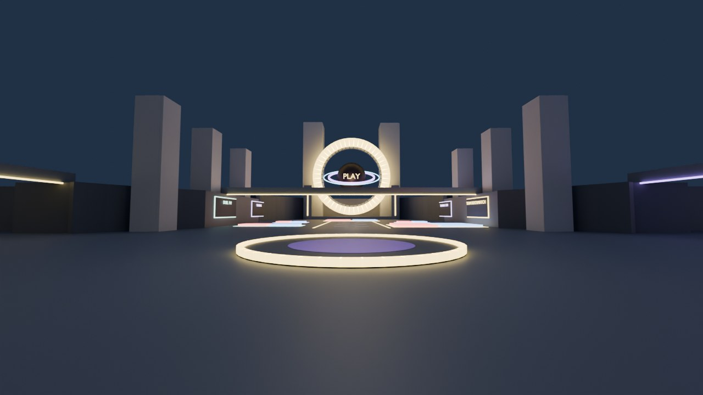
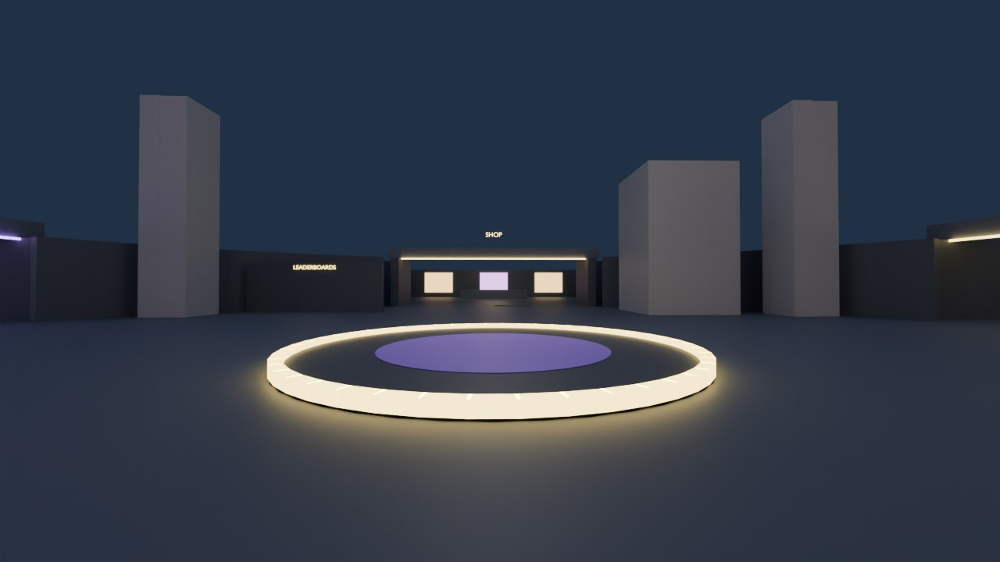
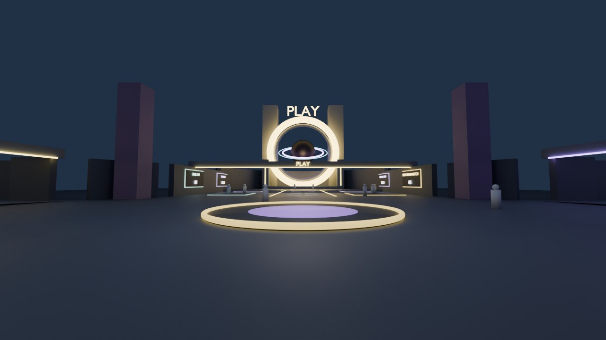
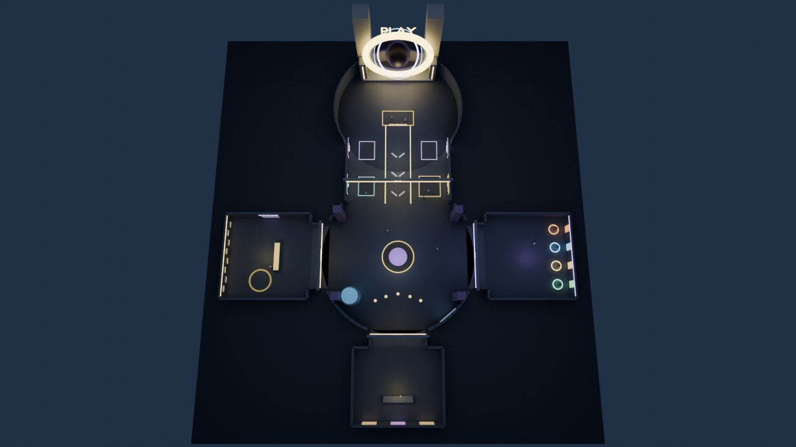
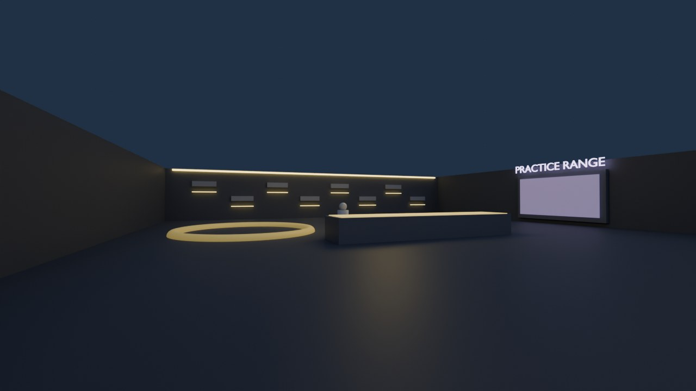
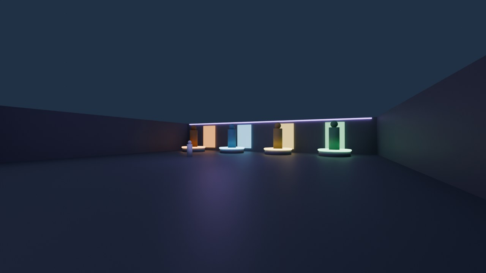
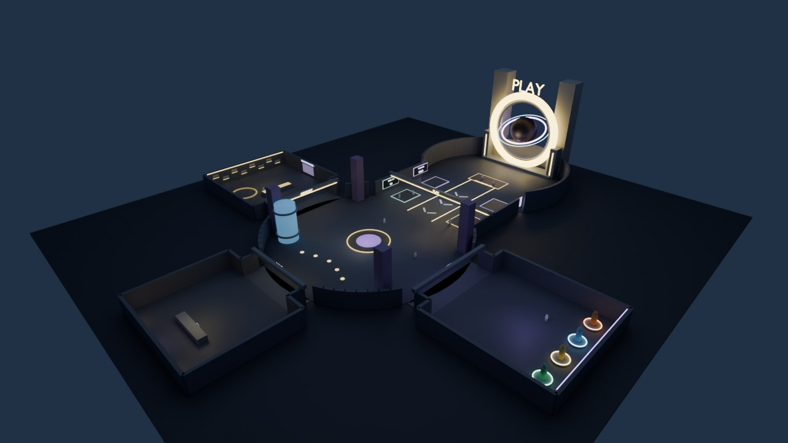

Walk-in hub: what I plan to build
A small round plaza where you arrive, with every destination leading off it. Straight ahead, a wide avenue lined with mode pads runs to the PLAY gate. The ARMORY and KITS halls open left and right. The SHOP is behind you.
Fifth version: the fourth layout scaled up by 40% across the floor. Distances, openings, the halls and the gate grow; wall height, queue pads and props stay the same size.
How we got here. The first two put everything in one open hall: the first felt cramped, the second empty. The third copied the RIVALS structure (separate places off a central spot) but was narrow and closed in. This one keeps that structure and opens it up: the PLAY avenue is 80 studs wide instead of 44, the plaza 116 across instead of 72, the side halls are open along their whole front, and the walls are 14 studs tall instead of 26, so you see sky and the landmarks over them.
These are blockout renders from Blender, with no roofs: the lobby is open to the sky. They show layout, scale and sightlines. They do not show final art, materials or Roblox lighting, and the figures are stand-ins. The layout is now built into the lobby file; it has not been played in Studio yet.
Built into the lobby file
The fifth version is now the editable lobby (assets/environment/source/Lobby.rbxm) and its playable copy. These renders are of that file, read the way the game reads it, with the queue pads, leaderboard, kiosk and signs the game adds from markers. They check placement and orientation; Roblox lighting and materials will look different in Studio.




What differs from the concept: the queue pads keep their gameplay sizes; the leaderboard and kiosk face north, because lobby markers cannot be rotated yet; the kit plinths are empty until kit looks exist; the existing stone and purple columns are used as they are, so they are grey, not purple.
The first five seconds

Bird's eye
To scale. The gate is at the top and the player arrives facing it. Dotted rings are walking time from the arrival point.

Hero shots






How far everything is
| Destination | Walk from arrival | Seen without turning |
|---|
What changes from today
| Today (measured from the lobby file) | Proposed | |
|---|---|---|
| Room | One open floor, 500 by 500 studs, with 16-stud walls | A round plaza 162 studs across, a 112-stud-wide avenue, a gate court and three halls of about 90 by 90, with 14-stud walls. About 400 by 440 studs overall, close to today's 500 by 500 but with every part of it in use |
| Play destination | A floor plate with coloured pads and a sign | A ring gate about 70 studs tall holding the dark-matter anomaly, in its own court at the end of the PLAY avenue |
| Armory and kits | A marker and a sign each, to the left and right of the arrival point, outside the first view | Two halls off the plaza, left and right, each open along its whole front |
| Arrival point | Five markers on bare floor | The plaza, with a low lit centrepiece that does not block the view down the avenue |
| Canister | Behind the arrival point, unlabelled | In the plaza beside the shop doors, as the season display |
| Columns | Purple columns across the middle of the floor; tall stone columns to one side | Four purple columns around the plaza; the two stone columns stand behind the gate |
| Pads | Convergence, Duel, TDM and two Training pads | The same five. Four line the avenue; Convergence sits in the gate court. Queue rules do not change. |
Open choices
- Armory, kits and shop are not in the first view. A sign beam over each opening faces the plaza, so a quarter turn shows each one. The first view is kept for PLAY.
- Bigger means further. The halls are now about 9 seconds on foot and the gate about 15. PLAY on the menu still queues from anywhere. If walking feels slow, a faster walk speed inside the lobby only is a small change and keeps the size.
- The queue pads did not grow. They are play areas, so they keep their sizes; in a wider avenue they look smaller. They can be enlarged separately.
- The gate is the one new landmark that needs real art. Everything else can be built from blocks and the assets already in the lobby.